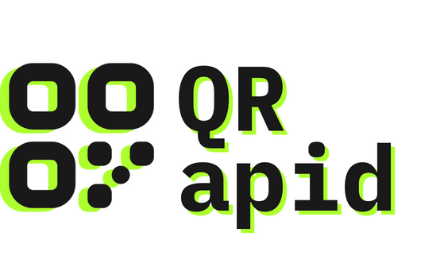

Convert your
link to QR code.
Your QR code will be generated automatically, your generated QR code will open this URL.

Your QR code will be generated automatically, your generated QR code will open this URL.
Make your custom QR code in a few taps. All you need is your mobile device or computer and browser; you don't have to download special software or heck even create an account to use this tool.
Enter the URL you'd like to generate a QR code for, then click "Generate". This typically takes just a second or two to generate the QR code.
Scan the generated QR code using a QR scanner yourself and verify if it redirects to the correct resource.
If the URL is correct and the QR code works, click on "Download" to save the QR code, which you can now utilize as needed. We currently only support .png format. More formats will be available soon.
Enchanced features are on it's way! We're excited to announce that soon, you'll be able to personalize your usage even more with customizable colors, add creativity to your QR codes with image art, and enjoy expanded download options with different formats.